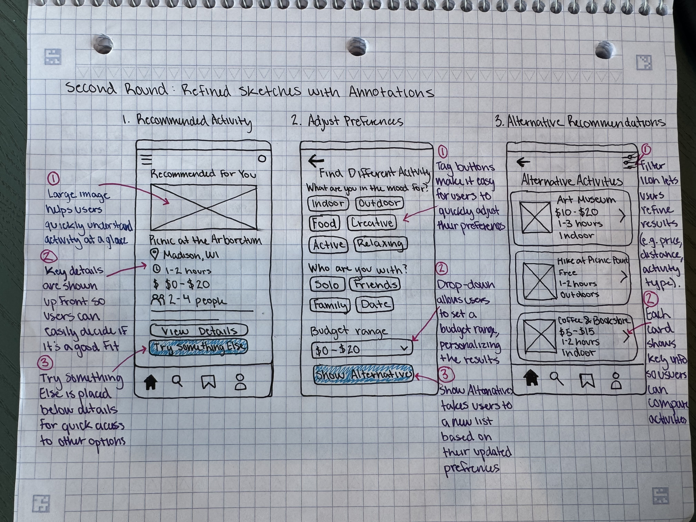

Featured Projects
Explore some of my recent work in UX design and web development.

Activity Recommendation App
UX Design | LIS 470 | In Progress
Designing a mobile app that helps users discover activities based on their interests, budgets, and preferences.
View Project
Dance Through the Decades
Web Design | LIS 351
A dance-themed website built with HTML and CSS, focusing on visual design, accessibility, and navigation.
View Project